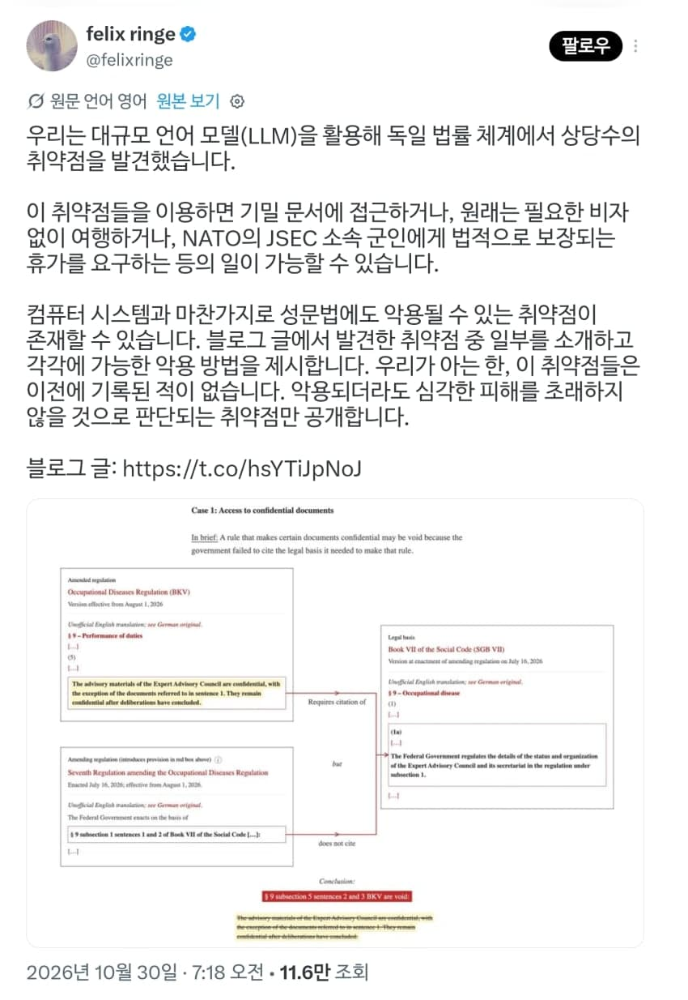
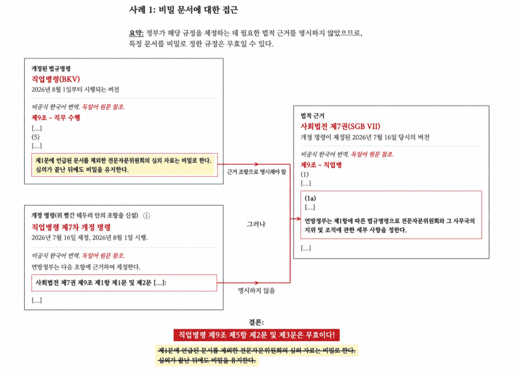

한국 법도 누더기라 여기저기 악용가능한 사례 많을거같다


법안 개정하는게 참 어려움
법제처에서 아주 좋아하겠는데
우리나라는 특별법이니 뭐니 존나 모르는 법령들 투성이라 허점 투성이일 거임
특별법에 의한 구멍은 별로 신경 안 쓰는게 특별법이 우선적으로 적용된다는 규칙이 있어서 그럴껄
ㅇㅇ 법은 기술발전의 속도를 따라갈 수 없음
기술이 가장 빠르고 법이 가장 느림
누더기 아닌 법이 있긴 할까?
시버펑크의 시대는 온다...
우리나라에도 분명히 법으론 금지하는데 처벌조항이 없는 법령들이 믾음
요즘 변호사들도 ai로 법안 허점 찾는거 많이 한다는거 같더라
한국법은 저런걸로 허점 찾아서 뭐 하려고 하면 높으신분 기분상해죄로 ㅈ될수 있습니다
국내에도 사례 없는거 아님
1심2심 보통 관행적이거나 상식적인부분 잘 안 다뤄서 그러지 3심에서 법률 문구로만 따지는 경우엔 통함
물론 저따위 짓거리 하려면 대법원까지 가야한다는 말이니 돈있고 시간 태울 자신있으면 하는거기도 함
기존에도 없던 사례 아니잖아
불법주차 단속 걸리니까 대법원까지 끌고가서 단속주체라 명시된건 지자체라는 조항 끌고와서 경찰이 하는 불법주차 단속 무력화해버린게 변호사임
변호사는 사회정의를 실현하는 직업 아니라고 할 때 줘패고 싶은게 법 헛점이나 어거지 논리로 법 무력화해서 법질서 개판 만드는 짓거리를 옹호하겠다고 꺼내는 경우가 많음
법의 허점 찾아 찌르기가 변호사들 일이였는데 이젠 아니게 됐네
뭔 개소리임
판사: 법리상 해당하지 않는 부분이지만 고오얀놈 땅땅땅 유죄
어허 한국에선 허점이 있다? 관습 헌법 이라는 논리까지 쓰는걸
그 사례가 법에 없으니까 마음대로 해도 되지?의 카운터가 맞음
법에 명시된거 없으니까 수도이전이라는 중대사를 인기에 기대서 얼렁뚱땅 넘기려 하는건 행정부 권한 넘어섰다는 판결임
할거면 법부터 만들던가 국민투표 붙이던가 하라는 의미지
경국대전 언급되는 이유도 경국대전에서 처음으로 한양이 수도로 언급됐다고 그 이전에 한양이 수도가 아니였다는게 말이 되냐로 언급된거지 경국대전에 근거해서 서울이 확고부동한 수도다 라는 근거로 언급된게 아님
저것도 애매한경우에나 통하지 범죄목적이면 있는죄 없는죄 다 뒤집어 씌워서 보냄
헌법에 국방의 의무는 누구나 진다면서 남자만 군대 보내는게 이나라인데
내가 이 나라의 총통이 되겠다!